DeepSeek Harness 插件：从你的指令和纠正里提炼代码约定，存成可手改的规则，每个会话自动遵守。
“不要用 any”“记住用 const”——信号自动落成带置信度的条目。
规则就是一份 markdown，随便改；低置信度的先待确认，不污染提示词。
会话开始时冻结注入，前缀缓存不抖；`taste why` 能看到每条规则的证据。
$ dsh plugin --profile desktop add github:BaxterL/dsh-code-taste
v0.2.0 · MIT · 仓库：BaxterL/dsh-code-taste
A DeepSeek Harness plugin: distils your instructions and corrections into editable rules, then follows them in every session.
"Don't use any", "remember: const" — each signal becomes a confidence-scored entry.
Rules are one markdown file you can edit by hand; low-confidence ones wait for review.
Frozen at session start so the prompt prefix stays stable; `taste why` shows the evidence.
$ dsh plugin --profile desktop add github:BaxterL/dsh-code-taste
v0.2.0 · MIT · repo: BaxterL/dsh-code-taste